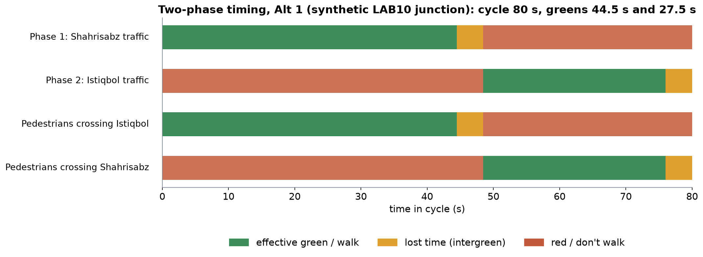
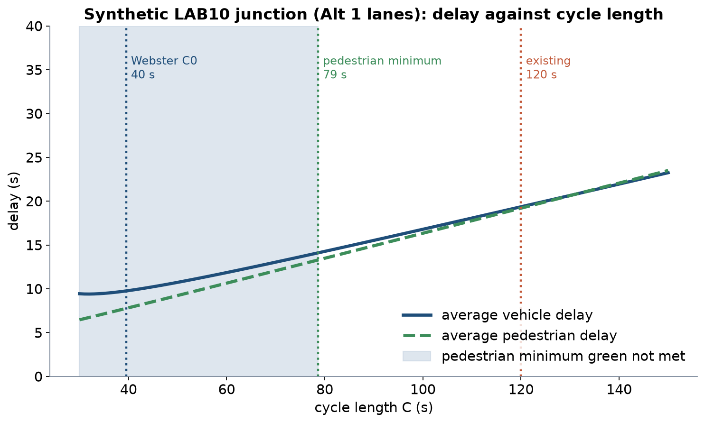
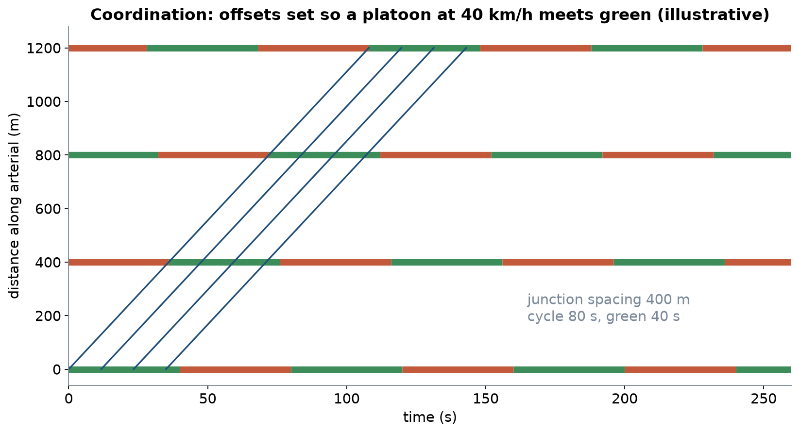
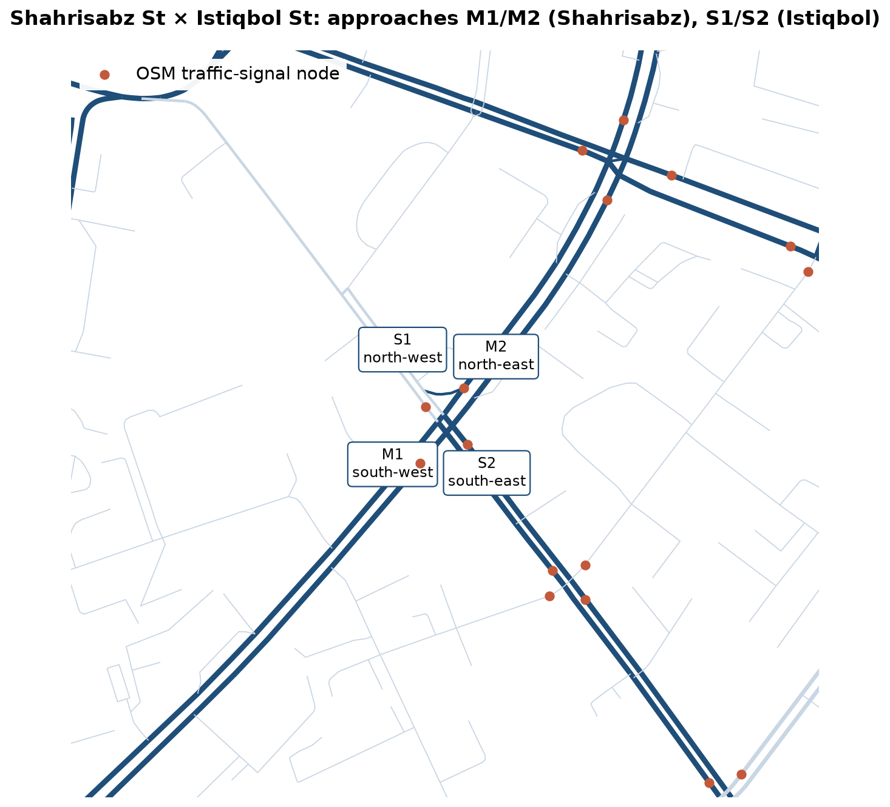
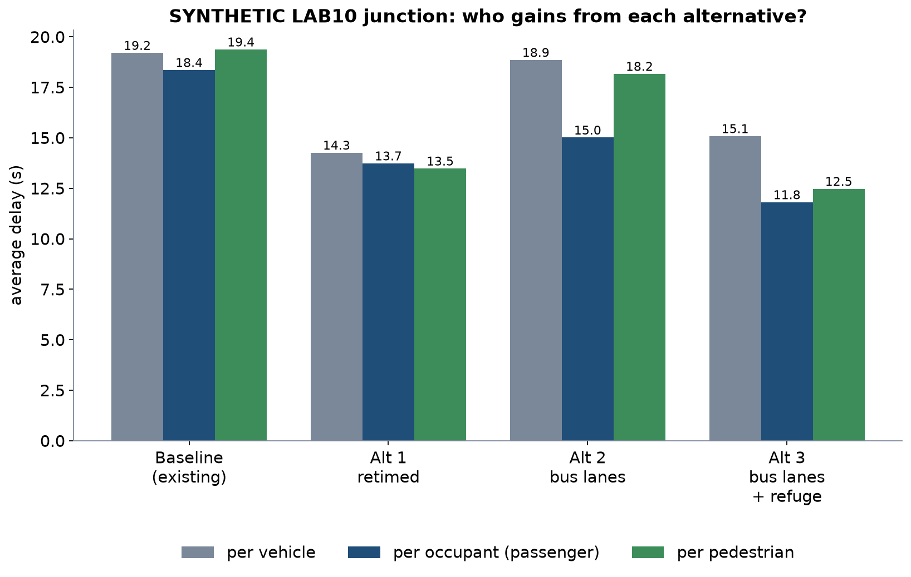

LEC20 · Urban Transport Systems Planning and Design · TSTU · Prof. J. Sodikov
1 / 26
What you will be able to do after today
Calculate a two-phase signal timing with Webster's method
Include pedestrian crossing time and public transport priority in the timing
Compare geometric and operational measures by who gains and who pays
Check a model against observations and report its uncertainty
2 / 26
This lecture turns traffic theory into signal design. You will calculate a two-phase signal timing with Webster's method and add pedestrian crossing time and public transport priority. You will compare geometric and operational measures by who gains and who pays. Finally, you will check a model against observations and report how uncertain its results are.
Signal-control vocabulary
Phase: a set of movements that receive green together
Cycle C: time for one full sequence of phases
Split: share of the cycle given to each phase as effective green g
Intergreen and lost time L: amber and all-red plus start-up losses
Offset: start of green relative to the neighbouring junction
3 / 26
A phase is a set of movements that receive green together, and the cycle C is the time for one full sequence of phases. The split is the share of the cycle that each phase gets as effective green g. Intergreen is the amber and all-red time between phases, and lost time L adds the start-up losses. The offset is when green starts compared with the neighbouring junction.
A two-phase timing plan

Synthetic LAB10 junction, Alt 1: 80 s cycle. Pedestrians cross each street while the parallel traffic has green.
4 / 26
The figure shows the Alt 1 timing plan of the synthetic LAB10 junction, with an 80 s cycle. The top two rows are the two traffic phases, Shahrisabz and then Istiqbol. The bottom two rows are the pedestrian signals: people cross each street while the traffic parallel to it has green. So people can cross Shahrisabz only during the Istiqbol phase.
Webster's method
Flow ratio y = q / s for each lane group; the critical y per phase governs
Y = sum of critical flow ratios; must stay below 1
Optimum cycle C₀ = (1.5 L + 5) / (1 − Y)
Effective greens in proportion to the critical y values
Average delay d = 0.9 [C(1−λ)² / 2(1−λx) + x² / 2q(1−x)], λ = g/C
5 / 26
Webster's method sets a cycle from the flows. For each lane group the flow ratio is y = q / s, and the largest y in each phase is the critical one. Their sum Y must stay below 1, and the optimum cycle is C₀ = (1.5 L + 5) / (1 − Y). Greens are shared in proportion to the critical y values. In the delay formula the second term grows very fast as x approaches 1.
Pedestrians crossing 24 m at 1.2 m/s need 7 + 20 = 27 s of green
That needs a 78.6 s cycle → round up to 80 s
6 / 26
On Shahrisabz St, 1,800 cars plus 50 buses, at 2 passenger-car units (pcu) each, share three lanes of 1,800 pcu/h, so y = 0.35. On Istiqbol St, y = 0.22, so Y = 0.57, and with L = 8 s, C₀ = 39.5 s. But pedestrians crossing 24 m of Shahrisabz at 1.2 m/s need 7 + 20 = 27 s of green. Istiqbol has the smaller flow ratio and so the smaller green, which pushes the cycle up to 78.6 s, rounded up to 80 s. All these inputs are synthetic.
Cycle length: who pays for a long cycle?

Synthetic junction: above the pedestrian minimum cycle, vehicle and pedestrian delay both rise with cycle length; the existing 120 s cycle costs everyone.
7 / 26
The figure plots average vehicle and pedestrian delay against cycle length for the synthetic LAB10 junction. The shaded band marks cycles too short to give pedestrians their minimum green, so they are not allowed, whatever Webster's formula gives. Beyond that band, both curves rise as the cycle gets longer. The existing 120 s cycle therefore makes both drivers and pedestrians wait longer than an 80 s cycle.
Designing for pedestrians at signals
Minimum green = walk time + crossing length ÷ walking speed
Use a slower design speed where older people and children cross
A median refuge splits a wide crossing into two shorter stages
Leading pedestrian interval: walkers start before turning traffic
Every second of red is pedestrian delay; long waits invite red-light crossing
8 / 26
The minimum pedestrian green is the walk time plus the crossing length divided by the walking speed. Where older people and children cross, use a slower design walking speed. A median refuge splits a wide crossing into two shorter stages, and a leading pedestrian interval lets walkers start before turning traffic. Every second of red is a delay for pedestrians, and long waits invite crossing on red.
Public transport priority at signals
Passive priority: timing and progression set for bus speeds and stops
Active priority: green extension or early green when a bus is detected
Queue jumps and bus lanes let buses bypass the car queue
Conditional priority: only for late buses, protects cross-street traffic
Signal delay is a large, controllable share of bus running time
9 / 26
Signals can give buses priority in several ways. Passive priority sets timing and progression for bus speeds and stops, while active priority extends a green or starts it early when a bus is detected. Queue jumps and bus lanes let buses pass the car queue, and conditional priority helps only late buses, which protects cross-street traffic. Delay at signals is a large part of bus running time, and it can be controlled.
Bus lanes at junctions
Kerbside lanes conflict with right turns, stops and loading
Median lanes avoid the kerb but need safe pedestrian access to stops
Pre-signals and set-back stop lines give buses the front of the queue
Taking a lane from cars raises their degree of saturation
Enforcement decides whether the lane works
10 / 26
Bus lanes at junctions need careful design. A kerbside lane conflicts with right turns, stops and loading, while a median lane avoids the kerb but needs safe pedestrian access to its stops. Pre-signals and set-back stop lines let buses reach the front of the queue. Taking a lane from cars raises their degree of saturation, and enforcement decides whether the lane works.
Coordination along a corridor
Offsets let a platoon meet successive greens: a green wave
Works best in one direction and with regular junction spacing
All coordinated junctions share one cycle — usually the longest one needed
Progression speed is a policy choice: set it for safe urban speeds
Adaptive control adjusts splits to measured demand — needs detectors and maintenance
11 / 26
Coordination sets offsets so that a platoon, a group of vehicles moving together, meets one green after another: a green wave. It works best in one direction and where junctions are evenly spaced. All coordinated junctions must share one cycle, usually the longest one needed. The progression speed is a policy choice, so set it for safe urban speeds. Adaptive control changes the splits with measured demand, but it needs working detectors and maintenance.
A green wave

Illustrative: junctions 400 m apart, 80 s cycle, 40 s green, progression at 40 km/h.
12 / 26
In this illustrative figure, junctions stand 400 m apart, each with an 80 s cycle and 40 s of green. The offsets are set so that a platoon travelling at 40 km/h reaches each junction during green. The green and red bars show the signal at each junction, and the diagonal lines are vehicles. The wave works for one direction; traffic in the other direction and pedestrians may still wait.
Geometric and operational measures
Measure
Type
What it changes
Who gains / who pays
Retiming
Operational
Cycle and splits
Most users gain; cheap, needs counts
Median refuge
Geometric
Pedestrian minimum green
Pedestrians and everyone through shorter cycles; needs width
Bus lane
Geometric
Bus queueing
Bus passengers gain; car capacity falls
Active bus priority
Operational
Green timing for buses
Bus passengers gain; cross street waits longer
Turn ban
Operational
Conflicts and phases
Through traffic gains; detours elsewhere
Coordination
Operational
Offsets along the corridor
Main-road platoons gain; side streets and pedestrians may wait
13 / 26
The table compares six measures by type, what they change and who gains or pays. Retiming, active bus priority, turn bans and coordination are operational, so they change the control and not the street. A median refuge and a bus lane are geometric changes to the street itself. Each measure helps some users and costs others, such as a bus lane that helps passengers but removes car capacity.
LAB10 preview: one junction, four alternatives
Real OSM location; SYNTHETIC flows and timings, because Tashkent publishes no counts
14 / 26
LAB10 tests four alternatives at one Tashkent junction. The location is real and comes from OpenStreetMap. The traffic flows and signal timings are synthetic, because no counts for Tashkent are published.
The site: Shahrisabz St × Istiqbol St

OSM geometry with 24 signal nodes within 500 m. Pulatova (2024) photographed this junction as a redesign case.
15 / 26
The map shows the LAB10 junction of Shahrisabz St and Istiqbol St from OpenStreetMap geometry. OpenStreetMap has 24 signal nodes within 500 m of it. Approaches M1 and M2 are on Shahrisabz St, and S1 and S2 are on Istiqbol St. Pulatova (2024) photographed this junction as a redesign case, but the flows in the lab are synthetic.
Who gains from each alternative?

SYNTHETIC results; bus occupancy assumed 55 passengers, car occupancy 1.3.
16 / 26
For each alternative, the chart has three bars: the delay of an average vehicle, passenger and pedestrian. Passenger delay counts the people in each vehicle, with 55 passengers assumed per bus and 1.3 people per car. A bus therefore counts for many more people than a car. All results are synthetic.
Reading the results
Retiming alone: vehicle delay 19.2 → 14.3 s; the cycle falls from 120 to 80 s
Bus lanes alone: bus delay 11.1 s, but the cycle grows to 100 s for pedestrians
So passengers barely gain: 15.0 s against 13.7 s with retiming only
Bus lanes + refuge: 65 s cycle; passengers 11.8 s, pedestrians 12.5 s; vehicle delay 15.1 s (all vehicles)
The refuge, a geometric change, is what makes the short 65 s cycle possible
17 / 26
Retiming alone cuts the cycle from 120 s to 80 s and vehicle delay from 19.2 to 14.3 s. Bus lanes alone cut bus delay to 11.1 s, but the cycle grows to 100 s, so passengers wait 15.0 s against 13.7 s with retiming only. Bus lanes with a refuge allow a 65 s cycle, with passenger delay 11.8 s and pedestrian delay 12.5 s, while the delay averaged over all vehicles is 15.1 s. The refuge is a geometric change to the street, and it is what allows the shorter signal cycle.
How robust is the ranking?
Break-even bus occupancy for bus lanes alone: 120.2 passengers per bus
With the refuge: only 10.8 — the result survives almost any occupancy
Test saturation flow, walking speed and occupancy, one at a time
Report the conditions under which your preferred alternative wins
18 / 26
Bus lanes alone beat retiming for passengers only if each bus carries more than 120.2 passengers. With the refuge, the break-even falls to 10.8 passengers per bus, so the result holds for almost any occupancy. Test saturation flow, walking speed and occupancy one at a time. Then report the conditions under which your preferred alternative wins.
Checking models against observations
A delay formula is a model: check it before you trust its ranking
Observed: cycle and greens by stopwatch, saturation headways, queue at end of red
Compare predicted and observed queues for each approach
If they disagree, recalibrate saturation flow and lost time first
Webster assumes random arrivals and undersaturation — not valid when queues persist
19 / 26
A delay formula is a model, so check it against the junction before you trust its ranking. Observe the cycle and greens, the saturation headways and the queue at the end of red, and compare the predicted and observed queues on each approach. If they disagree, recalibrate saturation flow and lost time first. Webster's formula assumes random arrivals and queues that clear in each cycle, so it fails where queues persist.
Reporting uncertainty
State every assumption next to the result it drives
Give ranges from sensitivity tests, not one number
Local example: the TIP crash study reports a pedestrian odds ratio of OR 2.60–3.89 across coding choices
The conclusion held because every value in the range pointed the same way
Do the same for delay: does the ranking survive the range?
20 / 26
Write each assumption next to the result it drives, and give ranges from sensitivity tests rather than one number. The TIP crash study shows how: its pedestrian odds ratio is OR 2.60–3.89, depending on how one unclear code is handled. Its conclusion held because every value in the range pointed the same way. Ask the same of your delay results: does the ranking survive the range?
Signals as city assets
A timing plan is an asset: record it, date it, review it
TSTU already mapped Tashkent's signals in a GIS inventory (Sodikov et al., 2016)
OSM suggests about 729 signalised junction clusters to manage
Retiming is among the cheapest measures — if the data exist
21 / 26
A signal timing plan is an asset, like a pavement or a tree, so record it, date it and review it. TSTU has already mapped Tashkent's signals in a GIS inventory. OpenStreetMap suggests about 729 signalised junction clusters to manage. Retiming is among the cheapest measures, but only if the counts and timings exist.
Discussion
Your corridor's junction gets one change this year. Retiming, a refuge or a bus lane — which, and what evidence would convince the city?
Answer with vehicle, passenger and pedestrian delay — and one assumption you would test.
22 / 26
Your corridor's junction can get one change this year: retiming, a refuge or a bus lane. Choose one and argue for it with vehicle, passenger and pedestrian delay. Then name one assumption you would test, because the city will ask how sure you are.
Key takeaways
Webster gives a starting cycle; pedestrian crossing time often sets the real one
Rankings change when delay is counted per person instead of per vehicle
Geometric and operational measures work best together
Calibrate on observations, then report the range, not a single number
23 / 26
Webster's method gives a starting cycle, but pedestrian crossing time often sets the real one. A ranking can change when delay is counted per person instead of per vehicle. Geometric and operational measures work best together. Calibrate your model on observations, and then report a range, not a single number.
Before LAB10 and P10
Open LAB10_junction.gpkg in QGIS and LAB10_synthetic_junction.xlsx in Excel
Read Knoop's chapters on the fundamental diagram and shockwaves
Collect counts, cycle times and queues at one junction or crossing of your corridor
Course project Stage 3 (street design and operational calculations) is due this week
24 / 26
Before the lab, open LAB10_junction.gpkg in QGIS and the synthetic junction workbook in Excel. Read Knoop's chapters on the fundamental diagram and shockwaves. Collect counts, cycle times and queues at one junction or crossing of your corridor, from a safe point. Stage 3 of the course project, on street design and operational calculations, is due this week.
References
Urbanik, T., et al. (2015). Signal Timing Manual (2nd ed.), NCHRP Report 812. Transportation Research Board. https://www.nap.edu/read/22097/chapter/2
TU Delft, Department of Transport & Planning. CIEM6250 Transport Systems Design — units B-1 Network Design, B-2 Service Design, B-3 Physical Infrastructure Management, B-4 Traffic Operations Management (Smart Public Transport Lab education page; MSc Civil Engineering TTE track). https://www.tudelft.nl/citg/over-faculteit/afdelingen/transport-planning/research/labs/smart-public-transport-lab/education
Synthetic teaching dataset generated for this course (method and random seed in each workbook's README sheet).
Webster, F. V. (1958). Traffic Signal Settings. Road Research Technical Paper No. 39. London: HMSO.
Knoop, V. L. (2021). Traffic Flow Theory: An Introduction with Exercises (3rd ed.). TU Delft OPEN Publishing. https://books.open.tudelft.nl/home/catalog/book/203
World Health Organization (2023). Pedestrian Safety: A Road Safety Manual for Decision-Makers and Practitioners (2nd ed.). Geneva: WHO. https://www.who.int/publications/i/item/9789240072497
Global Designing Cities Initiative & NACTO (2016). Global Street Design Guide. Island Press. https://globaldesigningcities.org/publication/global-street-design-guide/
Wilson, N., Sánchez-Martínez, G., & Nassir, N. (2017). 1.258J/11.541J Public Transportation Systems, Spring 2017. MIT OpenCourseWare. https://ocw.mit.edu/courses/1-258j-public-transportation-systems-spring-2017/
Kittelson & Associates et al. (2013). Transit Capacity and Quality of Service Manual (3rd ed.), TCRP Report 165. Transportation Research Board. https://nap.nationalacademies.org/read/24766
Pulatova, Z. S. (2024). Walkability assessment of Tashkent city districts (PhD dissertation, in Uzbek; supervisor J. I. Sodikov). Tashkent State Transport University.
TU Delft (2014). CIE4821 Traffic Flow Theory and Simulation. TU Delft OpenCourseWare. https://ocw.tudelft.nl/courses/traffic-flow-theory-simulation/
Sodikov, J. I., et al. (under review). Odds of recorded death among police-recorded road-traffic casualties and register data quality in Tashkent, Uzbekistan. Traffic Injury Prevention (revision r4).
Sodikov, J. I., et al. (2016). GIS inventory of traffic signals on Tashkent streets (in Russian). Transport Systems of Siberia.